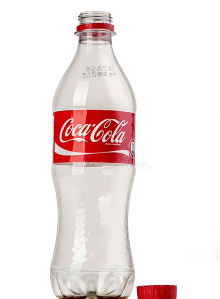

Punto di partenza...
La bottiglia Hutchinson rappresenta il primo vero tentativo di rendere la Coca-Cola un prodotto portatile e di largo consumo, segnando il passaggio cruciale dai banconi dei bar alla vendita al dettaglio. Prima del 1894, la bevanda era disponibile esclusivamente come sciroppo miscelato al momento nei "soda fountains". Fu Joseph A. Biedenharn a intuire il potenziale di imbottigliare la bevanda nel suo stabilimento di Vicksburg, nel Mississippi, utilizzando contenitori standard che all'epoca venivano impiegati comunemente per l’acqua gassata e le bibite gassate.
Dal punto di vista del design, la Hutchinson era molto lontana dalla silhouette sinuosa che oggi associamo alla Coca-Cola. Si presentava come una bottiglia cilindrica dal vetro molto spesso, dotata di un collo corto e tozzo. Non venivano utilizzate etichette cartacee, poiché non avrebbero resistito all’umidità delle ghiacciaie; per questo motivo, il marchio e la città di imbottigliamento venivano impressi direttamente nel vetro tramite una tecnica a rilievo. Il colore del vetro variava dal trasparente a tonalità di verde acqua o ambrato, a seconda della vetreria che produceva il lotto.

1894, Vicksburg (Mississippi).